Every frame below was taken by the mod's own integration harness running a real
Minecraft client inside the GitHub Actions workflow (software GL, Xvfb). Nothing here is a
mockup or an offline render: the client walked the worlds, opened the lens, tore the membrane
and photographed what it saw.
12 captures
junit_tests30
junit_failures0
server_realms_and_journeyTrue
client_native_glslTrue
client_in_world_integrationTrue
workflow run · 5feb4ab977ff · jar sha256 c211c1ec94f899e7...
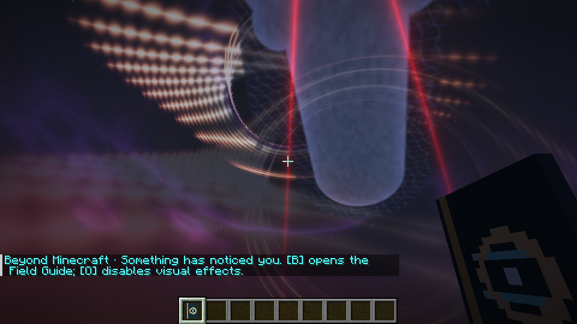
beyond-01-witness.png First witnessed frame inside a Beyond world 528 kB
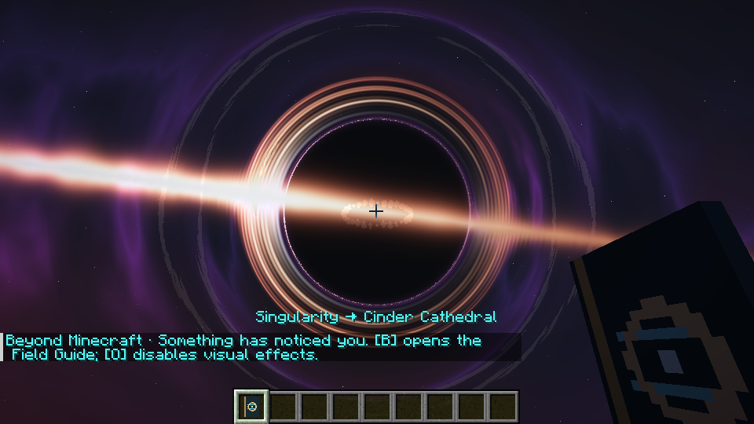
beyond-02-singularity.png Singularity core, up close 492 kB
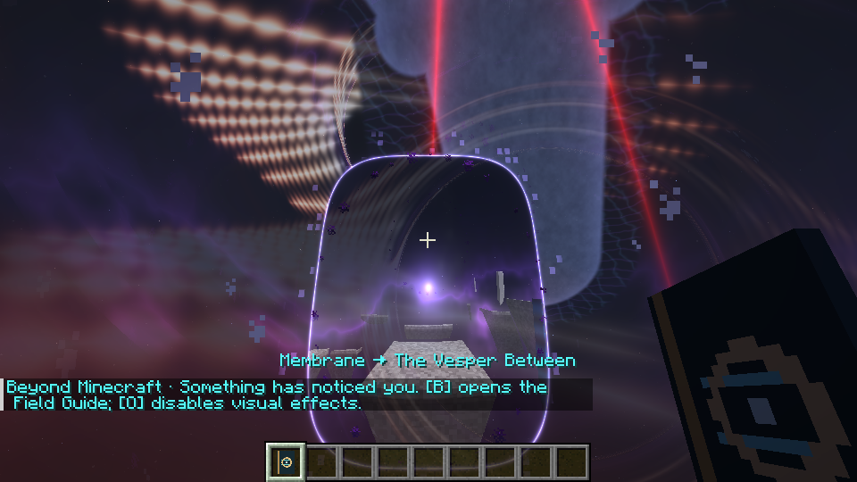
beyond-03-membrane.png Reality membrane holding the surface together 519 kB
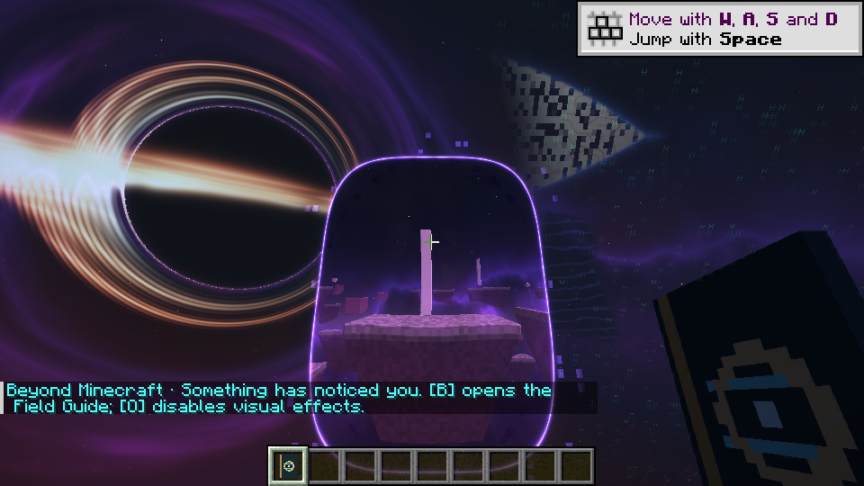
beyond-04-lens-0.png Reality lens 0 -- world seen through the lens post-process 546 kB
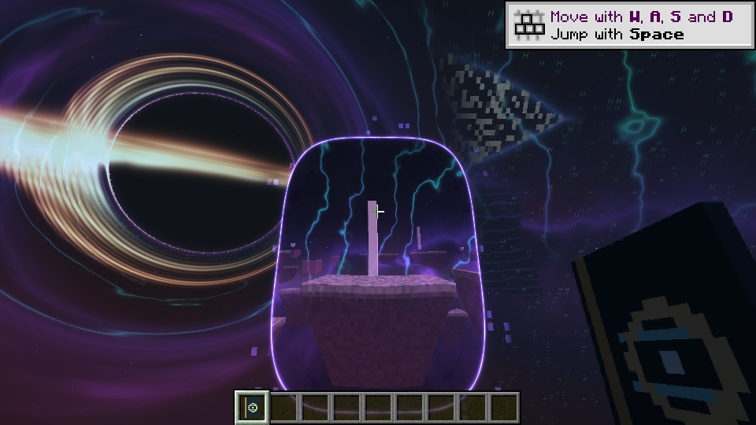
beyond-04-lens-1.png Reality lens 1 -- world seen through the lens post-process 587 kB
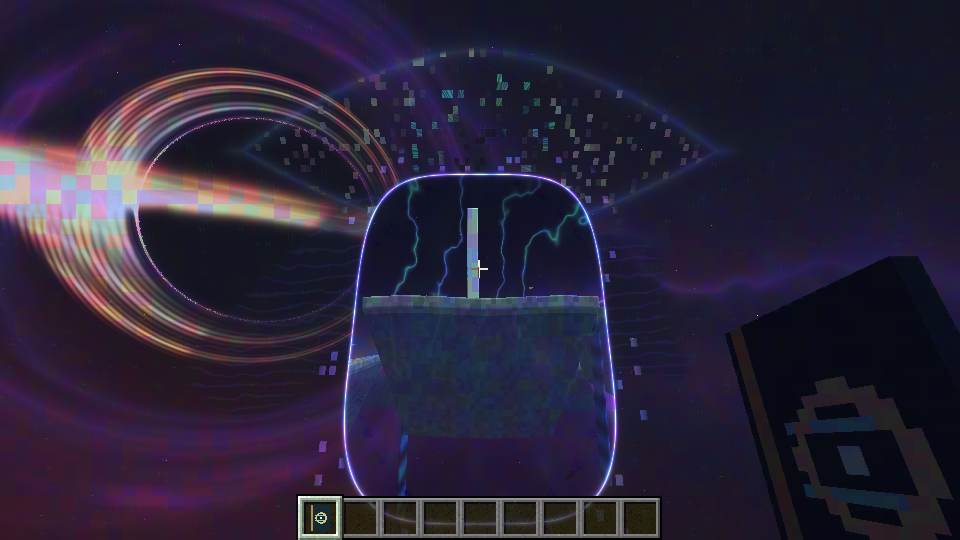
beyond-04-lens-2.png Reality lens 2 -- world seen through the lens post-process 512 kB
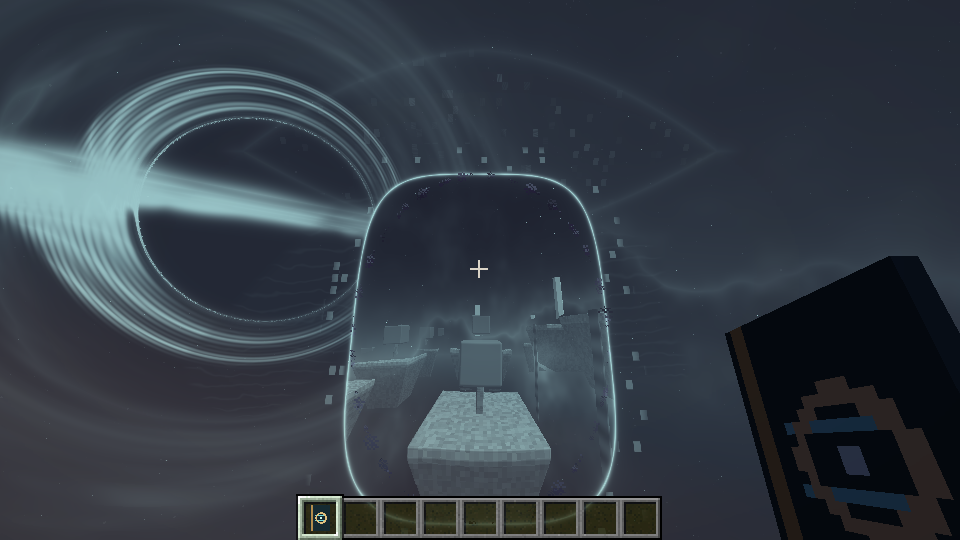
beyond-04-lens-3.png Reality lens 3 -- world seen through the lens post-process 365 kB
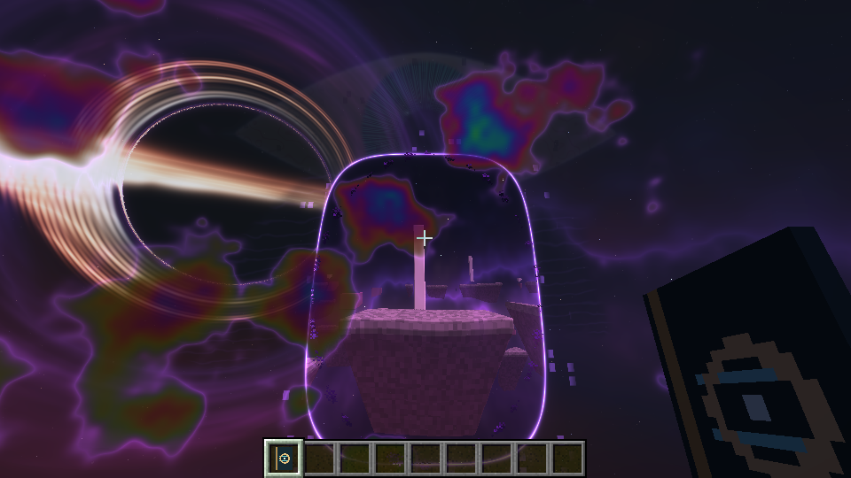
beyond-04-lens-4.png Reality lens 4 -- world seen through the lens post-process 557 kB
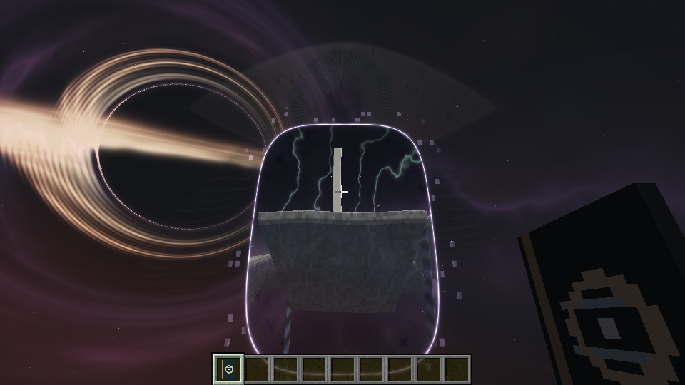
beyond-04-lens-5.png Reality lens 5 -- world seen through the lens post-process 401 kB
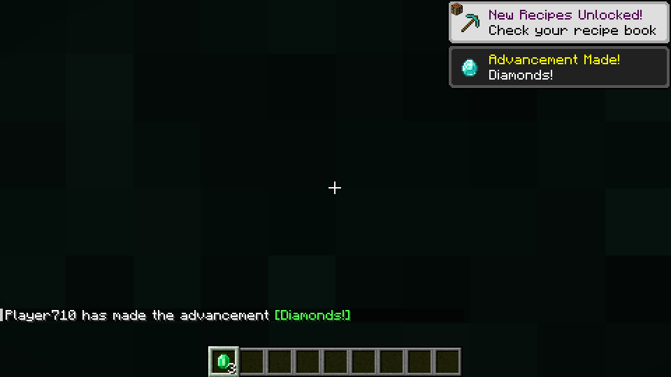
beyond-05-generated-realm.png A generated realm plate from the multiverse table 618 kB
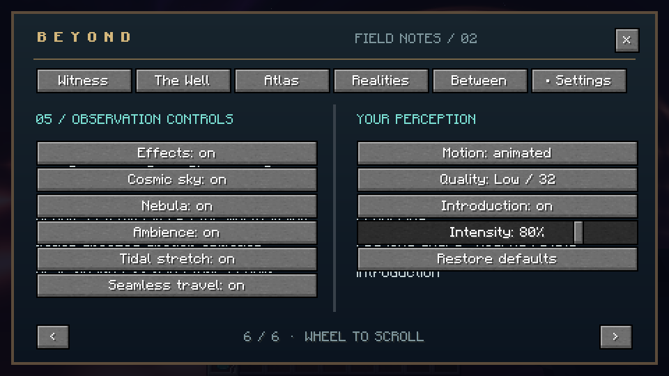
beyond-06-field-guide.png Field guide open in the player's hand 71 kB
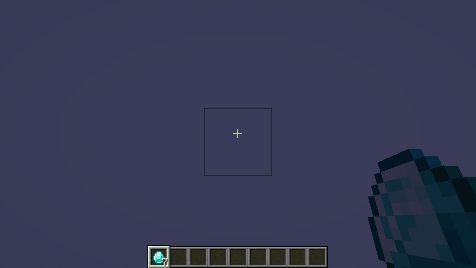
beyond-07-native-depth-occlusion.png Lens occlusion against real foreground geometry (native depth buffer) 35 kB